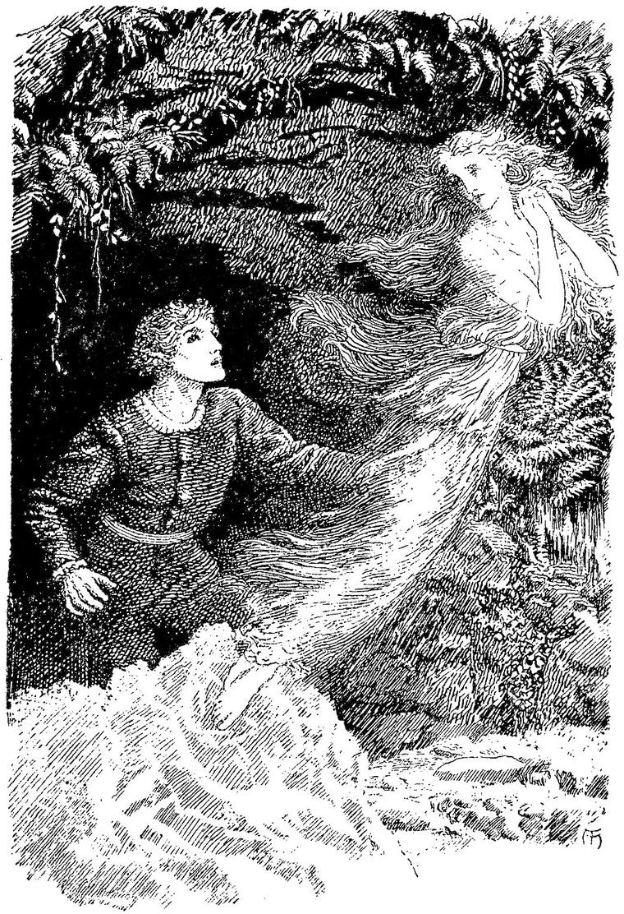

Of life had washed her, or as if a sleep
Lay on her eyelid, easier to sweep
Than bee from daisy.”
BEDDOES’ Pygmalion.
Or snow that sneweth yn wynterys day.”
Romance of Sir Launfal.
I walked on, in the fresh morning air, as if new-born. The only thing that damped my pleasure was a cloud of something between sorrow and delight that crossed my mind with the frequently returning thought of my last night’s hostess. “But then,” thought I, “if she is sorry, I could not help it; and she has all the pleasures she ever had. Such a day as this is surely a joy to her, as much at least as to me. And her life will perhaps be the richer, for holding now within it the memory of what came, but could not stay. And if ever she is a woman, who knows but we may meet somewhere? there is plenty of room for meeting in the universe.” Comforting myself thus, yet with a vague compunction, as if I ought not to have left her, I went on. There was little to distinguish the woods to-day from those of my own land; except that all the wild things, rabbits, birds, squirrels, mice, and the numberless other inhabitants, were very tame; that is, they did not run away from me, but gazed at me as I passed, frequently coming nearer, as if to examine me more closely. Whether this came from utter ignorance, or from familiarity with the human appearance of beings who never hurt them, I could not tell. As I stood once, looking up to the splendid flower of a parasite, which hung from the branch of a tree over my head, a large white rabbit cantered slowly up, put one of its little feet on one of mine, and looked up at me with its red eyes, just as I had been looking up at the flower above me. I stooped and stroked it; but when I attempted to lift it, it banged the ground with its hind feet and scampered off at a great rate, turning, however, to look at me several times before I lost sight of it. Now and then, too, a dim human figure would appear and disappear, at some distance, amongst the trees, moving like a sleep-walker. But no one ever came near me.
This day I found plenty of food in the forest—strange nuts and fruits I had never seen before. I hesitated to eat them; but argued that, if I could live on the air of Fairy Land, I could live on its food also. I found my reasoning correct, and the result was better than I had hoped; for it not only satisfied my hunger, but operated in such a way upon my senses that I was brought into far more complete relationship with the things around me. The human forms appeared much more dense and defined; more tangibly visible, if I may say so. I seemed to know better which direction to choose when any doubt arose. I began to feel in some degree what the birds meant in their songs, though I could not express it in words, any more than you can some landscapes. At times, to my surprise, I found myself listening attentively, and as if it were no unusual thing with me, to a conversation between two squirrels or monkeys. The subjects were not very interesting, except as associated with the individual life and necessities of the little creatures: where the best nuts were to be found in the neighbourhood, and who could crack them best, or who had most laid up for the winter, and such like; only they never said where the store was. There was no great difference in kind between their talk and our ordinary human conversation. Some of the creatures I never heard speak at all, and believe they never do so, except under the impulse of some great excitement. The mice talked; but the hedgehogs seemed very phlegmatic; and though I met a couple of moles above ground several times, they never said a word to each other in my hearing. There were no wild beasts in the forest; at least, I did not see one larger than a wild cat. There were plenty of snakes, however, and I do not think they were all harmless; but none ever bit me.
Soon after mid-day I arrived at a bare rocky hill, of no great size, but very steep; and having no trees—scarcely even a bush—upon it, entirely exposed to the heat of the sun. Over this my way seemed to lie, and I immediately began the ascent. On reaching the top, hot and weary, I looked around me, and saw that the forest still stretched as far as the sight could reach on every side of me. I observed that the trees, in the direction in which I was about to descend, did not come so near the foot of the hill as on the other side, and was especially regretting the unexpected postponement of shelter, because this side of the hill seemed more difficult to descend than the other had been to climb, when my eye caught the appearance of a natural path, winding down through broken rocks and along the course of a tiny stream, which I hoped would lead me more easily to the foot. I tried it, and found the descent not at all laborious; nevertheless, when I reached the bottom, I was very tired and exhausted with the heat. But just where the path seemed to end, rose a great rock, quite overgrown with shrubs and creeping plants, some of them in full and splendid blossom: these almost concealed an opening in the rock, into which the path appeared to lead. I entered, thirsting for the shade which it promised. What was my delight to find a rocky cell, all the angles rounded away with rich moss, and every ledge and projection crowded with lovely ferns, the variety of whose forms, and groupings, and shades wrought in me like a poem; for such a harmony could not exist, except they all consented to some one end! A little well of the clearest water filled a mossy hollow in one corner. I drank, and felt as if I knew what the elixir of life must be; then threw myself on a mossy mound that lay like a couch along the inner end. Here I lay in a delicious reverie for some time; during which all lovely forms, and colours, and sounds seemed to use my brain as a common hall, where they could come and go, unbidden and unexcused. I had never imagined that such capacity for simple happiness lay in me, as was now awakened by this assembly of forms and spiritual sensations, which yet were far too vague to admit of being translated into any shape common to my own and another mind. I had lain for an hour, I should suppose, though it may have been far longer, when, the harmonious tumult in my mind having somewhat relaxed, I became aware that my eyes were fixed on a strange, time-worn bas-relief on the rock opposite to me. This, after some pondering, I concluded to represent Pygmalion, as he awaited the quickening of his statue. The sculptor sat more rigid than the figure to which his eyes were turned. That seemed about to step from its pedestal and embrace the man, who waited rather than expected.
“A lovely story,” I said to myself. “This cave, now, with the bushes cut away from the entrance to let the light in, might be such a place as he would choose, withdrawn from the notice of men, to set up his block of marble, and mould into a visible body the thought already clothed with form in the unseen hall of the sculptor’s brain. And, indeed, if I mistake not,” I said, starting up, as a sudden ray of light arrived at that moment through a crevice in the roof, and lighted up a small portion of the rock, bare of vegetation, “this very rock is marble, white enough and delicate enough for any statue, even if destined to become an ideal woman in the arms of the sculptor.”
I took my knife and removed the moss from a part of the block on which I had been lying; when, to my surprise, I found it more like alabaster than ordinary marble, and soft to the edge of the knife. In fact, it was alabaster. By an inexplicable, though by no means unusual kind of impulse, I went on removing the moss from the surface of the stone; and soon saw that it was polished, or at least smooth, throughout. I continued my labour; and after clearing a space of about a couple of square feet, I observed what caused me to prosecute the work with more interest and care than before. For the ray of sunlight had now reached the spot I had cleared, and under its lustre the alabaster revealed its usual slight transparency when polished, except where my knife had scratched the surface; and I observed that the transparency seemed to have a definite limit, and to end upon an opaque body like the more solid, white marble. I was careful to scratch no more. And first, a vague anticipation gave way to a startling sense of possibility; then, as I proceeded, one revelation after another produced the entrancing conviction, that under the crust of alabaster lay a dimly visible form in marble, but whether of man or woman I could not yet tell. I worked on as rapidly as the necessary care would permit; and when I had uncovered the whole mass, and rising from my knees, had retreated a little way, so that the effect of the whole might fall on me, I saw before me with sufficient plainness—though at the same time with considerable indistinctness, arising from the limited amount of light the place admitted, as well as from the nature of the object itself—a block of pure alabaster enclosing the form, apparently in marble, of a reposing woman. She lay on one side, with her hand under her cheek, and her face towards me; but her hair had fallen partly over her face, so that I could not see the expression of the whole. What I did see appeared to me perfectly lovely; more near the face that had been born with me in my soul, than anything I had seen before in nature or art. The actual outlines of the rest of the form were so indistinct, that the more than semi-opacity of the alabaster seemed insufficient to account for the fact; and I conjectured that a light robe added its obscurity. Numberless histories passed through my mind of change of substance from enchantment and other causes, and of imprisonments such as this before me. I thought of the Prince of the Enchanted City, half marble and half a man; of Ariel; of Niobe; of the Sleeping Beauty in the Wood; of the bleeding trees; and many other histories. Even my adventure of the preceding evening with the lady of the beech-tree contributed to arouse the wild hope, that by some means life might be given to this form also, and that, breaking from her alabaster tomb, she might glorify my eyes with her presence. “For,” I argued, “who can tell but this cave may be the home of Marble, and this, essential Marble—that spirit of marble which, present throughout, makes it capable of being moulded into any form? Then if she should awake! But how to awake her? A kiss awoke the Sleeping Beauty! a kiss cannot reach her through the incrusting alabaster.” I kneeled, however, and kissed the pale coffin; but she slept on. I bethought me of Orpheus, and the following stones—that trees should follow his music seemed nothing surprising now. Might not a song awake this form, that the glory of motion might for a time displace the loveliness of rest? Sweet sounds can go where kisses may not enter. I sat and thought. Now, although always delighting in music, I had never been gifted with the power of song, until I entered the fairy forest. I had a voice, and I had a true sense of sound; but when I tried to sing, the one would not content the other, and so I remained silent. This morning, however, I had found myself, ere I was aware, rejoicing in a song; but whether it was before or after I had eaten of the fruits of the forest, I could not satisfy myself. I concluded it was after, however; and that the increased impulse to sing I now felt, was in part owing to having drunk of the little well, which shone like a brilliant eye in a corner of the cave. I sat down on the ground by the “antenatal tomb,” leaned upon it with my face towards the head of the figure within, and sang—the words and tones coming together, and inseparably connected, as if word and tone formed one thing; or, as if each word could be uttered only in that tone, and was incapable of distinction from it, except in idea, by an acute analysis. I sang something like this: but the words are only a dull representation of a state whose very elevation precluded the possibility of remembrance; and in which I presume the words really employed were as far above these, as that state transcended this wherein I recall it:
In the very death of dreams!
Wilt thou—slumber from thee sweeping,
All but what with vision teems—
Hear my voice come through the golden
Mist of memory and hope;
And with shadowy smile embolden
Me with primal Death to cope?
Have embodied but their own;
Round their visions, form enduring,
Marble vestments thou hast thrown;
But thyself, in silence winding,
Thou hast kept eternally;
Thee they found not, many finding—
I have found thee: wake for me.”
As I sang, I looked earnestly at the face so vaguely revealed before me. I fancied, yet believed it to be but fancy, that through the dim veil of the alabaster, I saw a motion of the head as if caused by a sinking sigh. I gazed more earnestly, and concluded that it was but fancy. Neverthless I could not help singing again—
And can give thee up, I ween;
Come thou forth, for other duty
Motion pineth for her queen.
From thy slumbrous solitudes,
Come, sleep-walking, and betake thee
To the friendly, sleeping woods.
Round thee storms would never rave;
And when need of rest is sorest,
Glide thou then into thy cave.
Marble, be its spell on me;
Let thy slumber round me gather,
Let another dream with thee!”
Again I paused, and gazed through the stony shroud, as if, by very force of penetrative sight, I would clear every lineament of the lovely face. And now I thought the hand that had lain under the cheek, had slipped a little downward. But then I could not be sure that I had at first observed its position accurately. So I sang again; for the longing had grown into a passionate need of seeing her alive—
Have set me singing by thy side,
Life hath forsook the upper sky,
And all the outer world hath died.
My life all downward unto thee.
Dead moon of love! let twilight dawn:
Awake! and let the darkness flee.
Awake! or I shall perish here;
And thou be never more alone,
My form and I for ages near.
They utter but a feeble part:
Hear thou the depths from which they call,
The voiceless longing of my heart.”
There arose a slightly crashing sound. Like a sudden apparition that comes and is gone, a white form, veiled in a light robe of whiteness, burst upwards from the stone, stood, glided forth, and gleamed away towards the woods. For I followed to the mouth of the cave, as soon as the amazement and concentration of delight permitted the nerves of motion again to act; and saw the white form amidst the trees, as it crossed a little glade on the edge of the forest where the sunlight fell full, seeming to gather with intenser radiance on the one object that floated rather than flitted through its lake of beams. I gazed after her in a kind of despair; found, freed, lost! It seemed useless to follow, yet follow I must. I marked the direction she took; and without once looking round to the forsaken cave, I hastened towards the forest.
